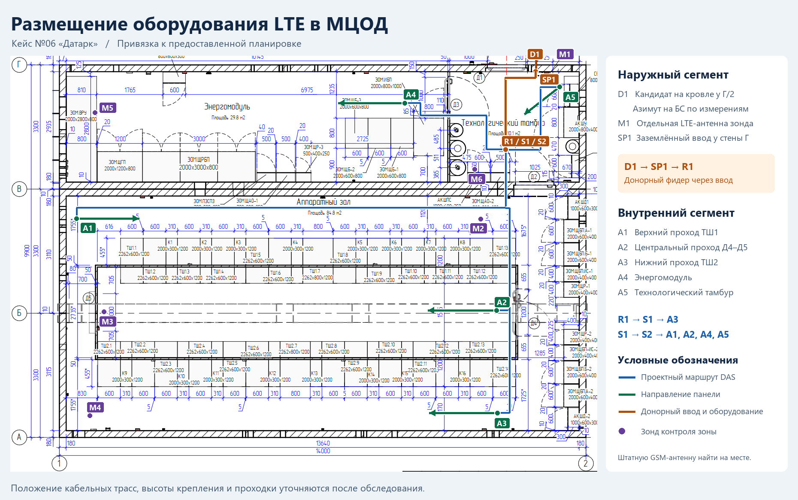

Бюджет радиолинии
Расчёт RSRP для пяти операторов и пяти зон
Сценарии расчёта
Сохраните текущие параметры LTE и GSM под именем. Повторное сохранение с тем же именем обновит сценарий.
Сравнение сценариев
Сохраните два сценария для сравнения.
Перекрытия и IM3 рассчитаны для несущих с заданными центрами. Влияние на доставку SMS проверяется на стенде.
Несущие LTE
Мощность каждой несущей задаётся на общем входе DAS после узла объединения.
Пустая частота использует верхнюю границу диапазона для оценки потерь. Указанная частота считается центром несущей DL.
Карта запаса RSRP
Расчёт по пяти контрольным точкам на плане МЦОД.

Выберите зону на плане.
Покрытие по зонам
Проверка тестового GSM-канала
Прямое перекрытие LTE и потенциальные продукты IM3 в полосах GSM UL и DL.
Проверка использует заданные центры LTE и номинальные полосы, для GSM — 200 кГц. IM3 рассчитывается для пар LTE UL и DL по формуле 2f₁ − f₂ при условии, что оба сигнала попадают на общий нелинейный элемент. Фактический уровень помех и доставку SMS проверяют на стенде.
Начальные значения взяты из предварительного сценария. SINR и VoLTE проверяются отдельно.